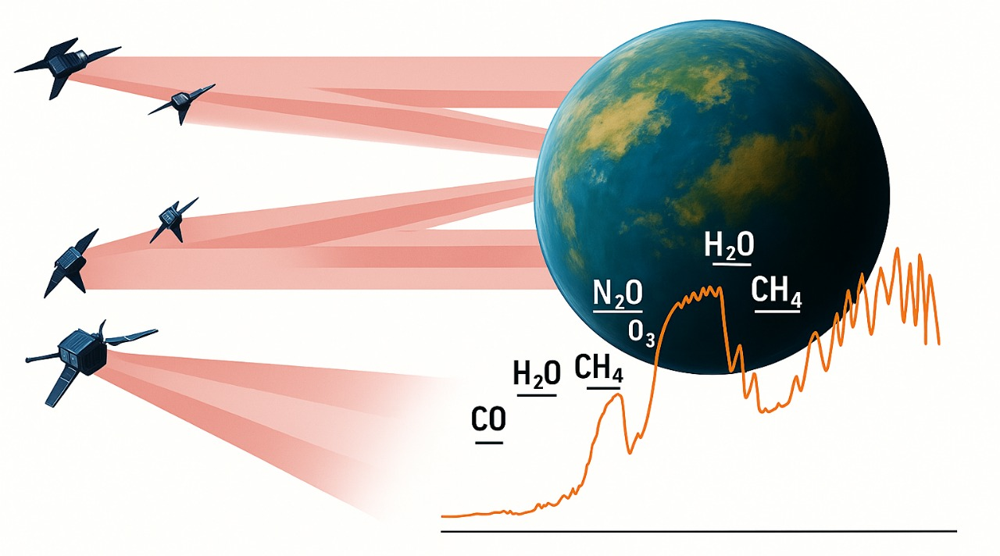
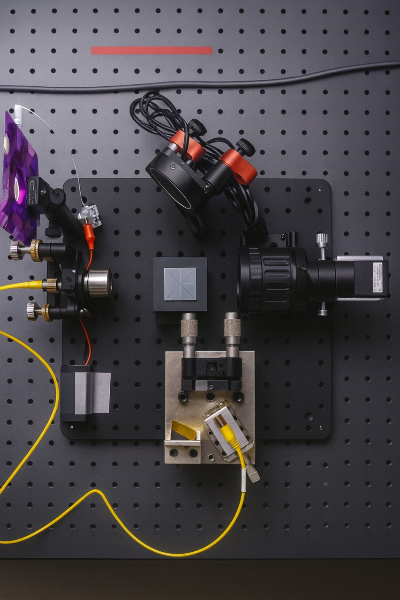
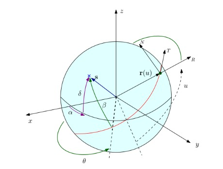

Objective
STARI is a twin-6U CubeSat formation-flying mission that serves as a pathfinder for future space-based optical interferometers. It demonstrates starlight handoff between satellites, validates sub-centimeter relative navigation, and advances critical optical and propulsion subsystems needed for exoplanet-imaging missions.

Core Technologies
Each CubeSat carries a compact optical payload with dual fast-steering mirrors, high-speed cameras, and LED beacon tracking.
Sensor-fusion GNC and cold-gas micro-propulsion enable millimeter-level control, while cross-link telemetry supports synchronized operation and data exchange.

Operations & Timeline
Operating in a 500–550 km sun-synchronous orbit, STARI runs through Standby, Transfer, and Science phases under autonomous control.
Launch is planned for 2029, followed by several months of formation-flying experiments and optical performance validation.